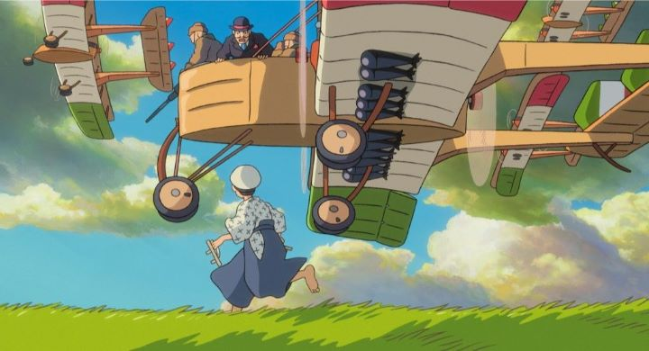

"The Wind Rises" was released in 2013 as Hayao Miyazaki's final film. Yes, he had come in and out of retirement before, but at the time it seemed real: Miyazaki was getting older (72 by this point), and Studio Ghibli itself would formally close its doors a few years later. Technically, Miyazaki would begin working on a new film to release nearly a decade later, but that couldn't have been predicted at the time. To walk into a theater and see the final work of the master behind "Nausicaa," "Castle in the Sky," "My Neighbor Totoro" and "Kiki's Delivery Service" is an emotional moment. As such, "The Wind Rises" was critically acclaimed, and for a time would be one of the last Japanese anime films nominated for an Oscar in America. However, even after hearing detailed analysis from other reviewers defending it, I personally feel it is one of Ghibli's worst movies, with in-the-moment opinion swayed because Miyazaki's name was on the poster. My opinion, of course, is a personal bias based on the type of movie "The Wind Rises" is. To put it simply, it plays out much more like a non-fiction around a person's biography, rather than the typical children's fantasy Ghibli is known for. Even Walt Disney Pictures seemed to recognize this, deciding to dub and release the film in North America under their "Touchtone Pictures" label instead of directly under Disney's name. And so your enjoyment of the film will depend entirely on how fond you are on non-fiction films or biography books to begin with. Adults will no doubt appreciate and respect the work, as was I (and typically am with the genre), but left the theater with little impact or desire to see it again.When I say the movie is like a biography, it might be because it effectively is exactly that. The lead character is Jiro Horikoshi, a real Japanese engineer during the World War II era. It starts from his childhood (complete in traditional, but today ridiculous, Japanese clothing) when Jiro first discovers the magic of aircraft, at the time a brand new invention. He dreams of designing them himself, and proceeds to do so after graduating from University. During this time, he meets a young woman named Naoko (who will later become his wife), and has intermittent dreams of talking to his idols, some of the world's greatest inventors around the creation of airplanes. In his career, he is forced to deal with reality: work in creating planes isn't commonly used for individuals or travellers to use at leisure, but for Japan's army, to be responsible for the country to fight during the coming World War but also responsible for the deaths of countless victims. Jiro's wife also begins to fall ill after years of happiness together. Jiro is faced with internal conflict: can he live with himself to continue dedicating his life to the passion he loves, or should he run away from it to refocus his values around those he loves?If taken as a personal film from Miyazaki and with knowledge of its creation, "The Wind Rises" is much more an art piece than films simply used as entertainment, as it speaks much about the man and requires a lot of background insight to appreciate it at its fullest. Miyazaki was known for having a great love for planes, and likely found Jiro a fascinating character worthy of his respect. The idea first took form as a short manga by Miyazaki, which he had originally no intention to make into a film (mercifully, he would go on to make this instead of a proposed "Ponyo II"). Jiro's conflicts subconciously mirror what one expects the director to be going through, a man who had dedicated more than half of his life to animation out of love, often at the expense of his family, despite becoming increasingly disgusted with what animation had become in the commercial culture of Japanese anime. The Japanese voice cast was also unorthadox, many being picked for their close ties to Miyazaki (and perhaps around the characters being inspired by them directly) rather than acting ability. The most glaring one is Hideaki Anno, the famous anime director behind "Neon Genesis Evangelion" whom Miyazaki himself was a good friend with, voicing the lead character, due to his meek and polite voice that sounded nothing like an actor. For better or for worse, I think the voice acting turned out well overall, and the English dub (with actors) tries to give similar attention in making the characters feel more real than cartoon. But a film with a real subject naturally has many drawbacks. The magical fantasy Miyazaki is known for is nearly gone. Ghibli tries to incorporate it in clever ways, from the dream sequences of Jiro walking along an airplane's wing in the air, to the inspired great earthquake of 1923, each a chance to make the animation pull its muscle. In quieter moments, creative liberties are taken to make Jiro and Naoko's romance feel a little sweeter in their initial meetings. But everything is still incredible grounded relative to Ghibli's other films, such that not only would a live-action adaptation have been just as viable, but even more appropriate than animation. And when adapting a man's life, it's hard to control the script. The film ends in the best way it could have (one of the final lines being a last-minute revelation during production), but leaves me wondering what the point of the movie really was. There wasn't a story, only a series of events around a life, ending when nothing of note was expected to occur further into his years. "The Wind Rises" is a beautiful and deeply personal film, but like the vast majority of art, feels otherwise empty and devoid of meaning to its existence. Similar paintings are considered priceless and hang in galleries for generations to appreicate, so it's understandable that many critics think of this as "the best animation ever made." But film and animation as a medium has gone beyond that, capable of portraying stories and ideas with music and acting in time, such that not only is it easier for mass audiences to appreicate, but also makes a more powerful impact on a person's life having experienced it. With this in mind, I disagree with many critics and state that this is absolutely NOT Miyazaki's best film... but given its genre, it is still better than many non-fiction works, and is still a fitting masterpiece for the end of an artist's career. I still highly recommend seeing it, ideally alongside its Japanese double-feature "The Tale of Princess Kaguya" and the execellent documentary of both films "In the Kingdom of Dreams and Madness."
- "Ani" More reviews can be found at : https://2danicritic.github.io/ Previous review: review_The_Triplets_of_Belleville Next review: review_The_Wonderful_World_of_Puss_'N_Boots